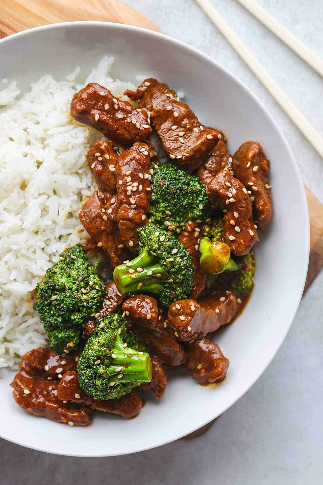

Beef and Broccoli

Ready for a delicious and healthy meal?
This special broccoli and beef recipe will be a wonderful addition to your meal plan. Enjoy a great combination of veggies and carbs in this tasty meal.
Ingredients
- 1 lb flank steak, sliced into thin strips
- 3 cloves garlic, minced
- ½ teaspoon grated ginger
- 2 tablespoons sesame oil
- ⅓ cup low sodium soy sauce
- ¼ cup brown sugar
- ¼ cup honey
- 1 cup beef broth
- 4 cups broccoli floret
- 2 tablespoons cornstarch
- 2 tablespoons water
- Sesame Seed (optional)
Steps
- In an oiled skillet over medium-high heat, sear the steak until cooked all the way through. Remove from the pan.
- Add a little more oil, then add the garlic and ginger to the pan. Sauté until soft.
- Add the sesame oil, soy sauce, brown sugar, honey, and beef broth. Stir until combined.
- Add the broccoli florets.
- In a separate bowl, combine cornstarch and water. Add to broccoli mixture. Bring to a boil, until sauce has thickened.
- Add the beef back into the mixture, and serve over rice with sesame seeds, if desired.
- Enjoy!